Project Overview
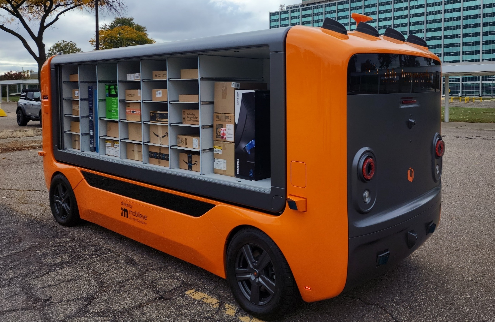
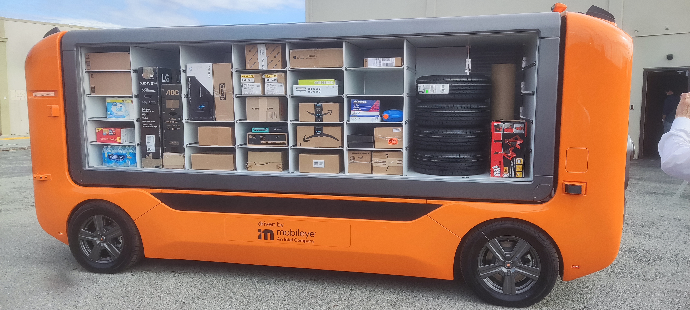
Udelv's autonomous last-mile electric delivery vehicle consists of two separable systems: the Transporter (an outsourced u-frame drive platform) and the uPod (the in-house robotic cargo storage unit that sits on top). As Senior Mechatronics Engineer I was responsible for the uPod's iris door mechanisms, load-bearing structure, sensor integration, and modular shelving system.
System Requirements
- Pod removable for standalone operation — lifting lugs and chain hoist compatible.
- Removable shelves and dividers with embedded shelf-detection sensors.
- Full-side automatic door opening with manual override.
- Hidden actuation and low noise for residential-area operation.
Pod Structure & Frame
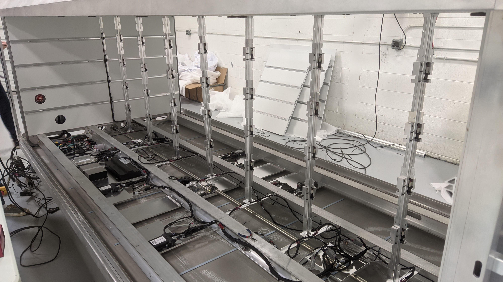

The structural frame carries the full load of 80 totes plus the iris door assemblies on each side. Rails, wiring, and control electronics are integrated inside the frame for a clean exterior and easy serviceability. Lifting lugs allow the complete pod to be hoisted off the Transporter with a standard chain hoist for maintenance or standalone operation.
Iris Door Development & Challenges

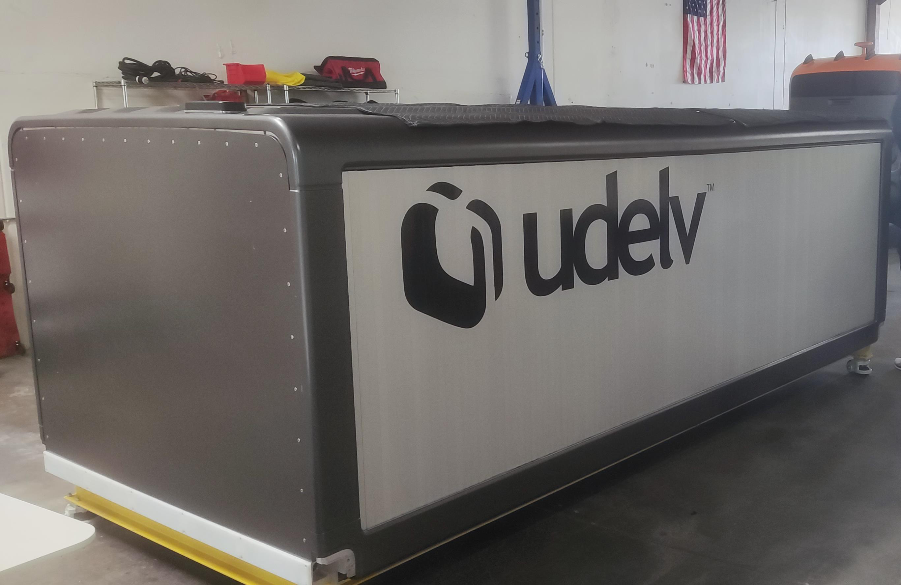
The iris door — a full-side automated rolling shutter that opens in ≤10 seconds — was the most mechanically challenging subsystem. Key development milestones:
- 3-month prototype crunch: plywood substituted for delayed composite shelving to meet the demo deadline.
- Inherited chain-and-sprocket drive failed: poor end-clip attachment, and the 5 mm pitch / 2.5 mm width chain was simply too thin to reliably transmit the required force without jamming or dropping links.
- Rack-and-pinion redesign: replaced chain with rack-and-pinion for positive engagement and better load distribution. Higher friction required a gearbox ratio change to maintain the 10 s cycle target.
- Reinforced guide channels and controlled corner geometry to prevent slat binding.
- Fixed 10 cm vertical sag in the iris mid-panel with rub strips and adjusted guide tolerances.
- Lubrication schedule determined through testing to minimize noise and wear.
Modular Shelving System
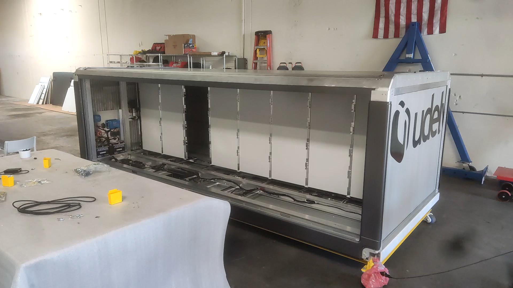
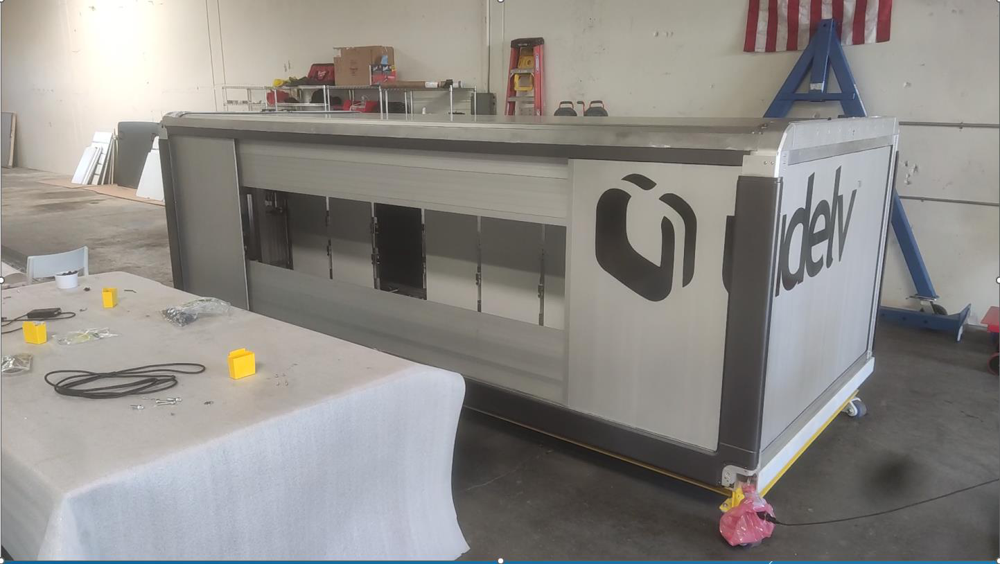
- Each of the 80 compartments is sized for standard shipping totes — consistent delivery-partner compatibility.
- Shelves and dividers are tool-lessly removable in the field for cargo reconfiguration.
- Shelf-detection sensors (embedded) report occupancy to the delivery software in real time.
Motor Current Measurement & Friction Analysis
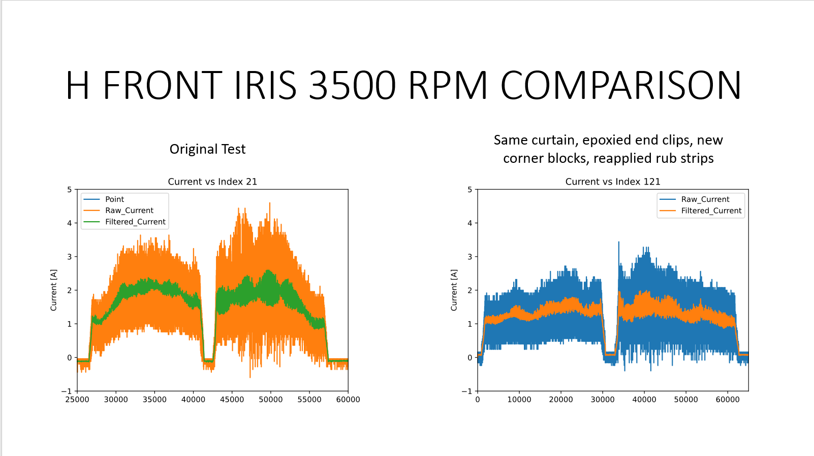
To quantify friction in the iris drive train and right-size the motors for the next-generation 10-second cycle requirement, I instrumented the prototype with current measurement across the full door travel. The resulting current vs. time traces revealed:
- Friction hot-spots at guide corners (peak current spikes).
- Steady-state friction baseline for gearbox ratio selection.
- Before/after comparison that validated the impact of rub strips and lubrication on the average load.
Full Assembly

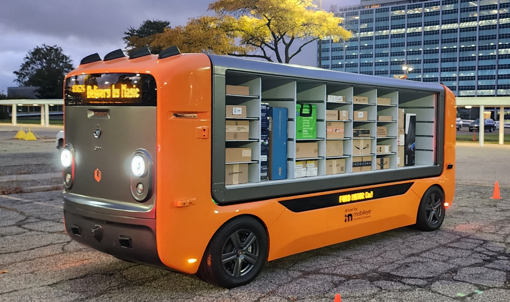
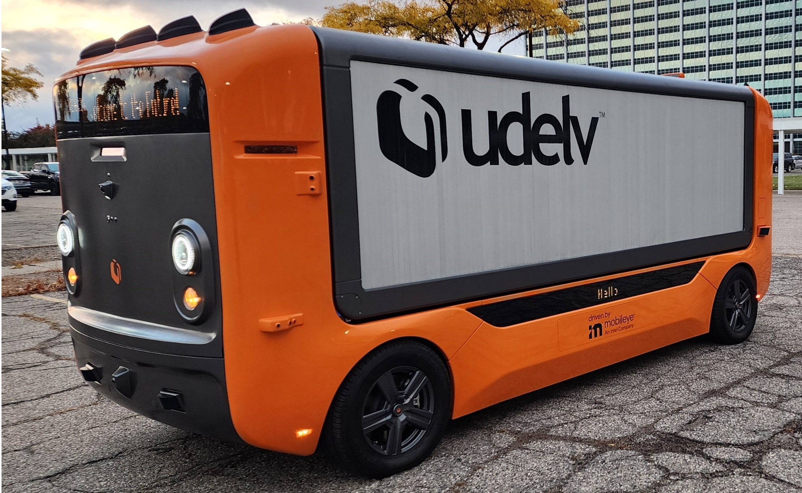
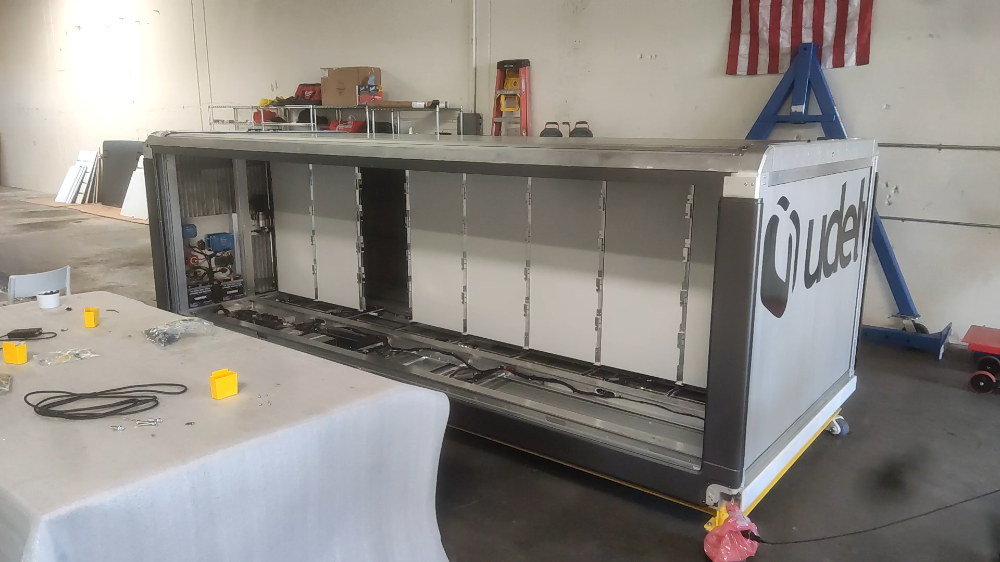
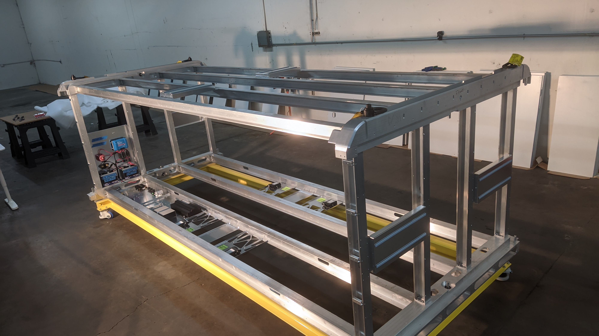
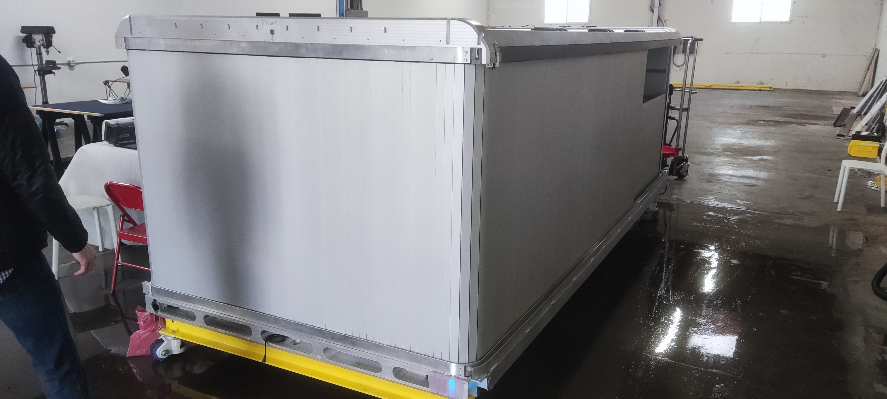
DFM / DFA & Vendor Sourcing
- Sourced and interfaced with vendors for injection-molded parts, aluminum extrusions, and OTS components, managing DFM and DFA review cycles to hit cost and lead-time targets.
- Used top-down SolidWorks modeling for complex assemblies, ensuring dimensional compatibility across hundreds of unique parts from multiple suppliers.
- Researched tribology materials and additives to achieve a product lifetime target of millions of duty cycles on the iris drive train.
Outcomes
- Stable structure — pod successfully lifted onto and off the Transporter using chain hoist.
- Reliable iris demos — rack-and-pinion redesign achieved consistent full-side open/close cycles in front of stakeholders.
- Million-cycle reliability — failure modes resolved through motor-current-draw analysis and tribology material optimization.
- Modular shelving — tool-less removal and shelf-detection sensors validated in lab testing.
- 2nd-prototype design completed in CAD; funding ran out before build.